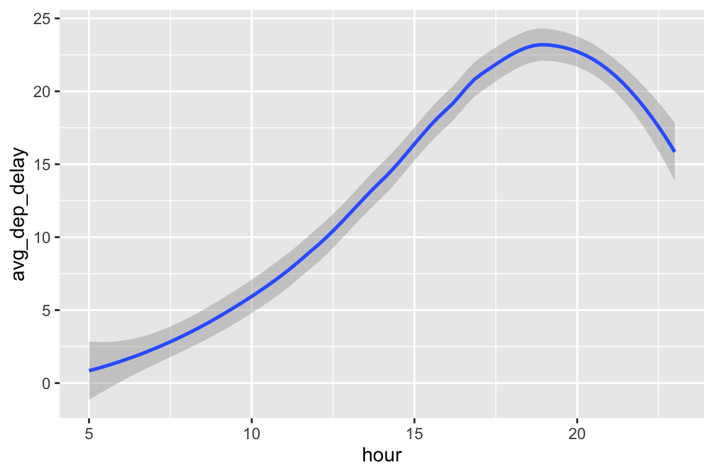

library(nycflights13)
library(tidyverse)
#> ── Attaching core tidyverse packages ───────────────────── tidyverse 2.0.0 ──
#> ✔ dplyr 1.1.2 ✔ readr 2.1.4
#> ✔ forcats 1.0.0 ✔ stringr 1.5.0
#> ✔ ggplot2 3.4.2 ✔ tibble 3.2.1
#> ✔ lubridate 1.9.2 ✔ tidyr 1.3.0
#> ✔ purrr 1.0.1
#> ── Conflicts ─────────────────────────────────────── tidyverse_conflicts() ──
#> ✖ dplyr::filter() masks stats::filter()
#> ✖ dplyr::lag() masks stats::lag()
#> ℹ Use the conflicted package (<http://conflicted.r-lib.org/>) to force all conflicts to become errors4 Data transformation
Prerequisites
4.2.5 Exercises
- Pipelines for each part are given below.
flights |>
filter(arr_delay >= 120) |>
arrange(desc(arr_delay))
#> # A tibble: 10,200 × 19
#> year month day dep_time sched_dep_time dep_delay arr_time sched_arr_time
#> <int> <int> <int> <int> <int> <dbl> <int> <int>
#> 1 2013 1 9 641 900 1301 1242 1530
#> 2 2013 6 15 1432 1935 1137 1607 2120
#> 3 2013 1 10 1121 1635 1126 1239 1810
#> 4 2013 9 20 1139 1845 1014 1457 2210
#> 5 2013 7 22 845 1600 1005 1044 1815
#> 6 2013 4 10 1100 1900 960 1342 2211
#> # ℹ 10,194 more rows
#> # ℹ 11 more variables: arr_delay <dbl>, carrier <chr>, flight <int>, …flights |>
filter(dest %in% c("IAH", "HOU"))
#> # A tibble: 9,313 × 19
#> year month day dep_time sched_dep_time dep_delay arr_time sched_arr_time
#> <int> <int> <int> <int> <int> <dbl> <int> <int>
#> 1 2013 1 1 517 515 2 830 819
#> 2 2013 1 1 533 529 4 850 830
#> 3 2013 1 1 623 627 -4 933 932
#> 4 2013 1 1 728 732 -4 1041 1038
#> 5 2013 1 1 739 739 0 1104 1038
#> 6 2013 1 1 908 908 0 1228 1219
#> # ℹ 9,307 more rows
#> # ℹ 11 more variables: arr_delay <dbl>, carrier <chr>, flight <int>, …flights |>
filter(carrier %in% c("UA", "DL", "AA"))
#> # A tibble: 139,504 × 19
#> year month day dep_time sched_dep_time dep_delay arr_time sched_arr_time
#> <int> <int> <int> <int> <int> <dbl> <int> <int>
#> 1 2013 1 1 517 515 2 830 819
#> 2 2013 1 1 533 529 4 850 830
#> 3 2013 1 1 542 540 2 923 850
#> 4 2013 1 1 554 600 -6 812 837
#> 5 2013 1 1 554 558 -4 740 728
#> 6 2013 1 1 558 600 -2 753 745
#> # ℹ 139,498 more rows
#> # ℹ 11 more variables: arr_delay <dbl>, carrier <chr>, flight <int>, …flights |>
filter(month %in% c(7, 8, 9))
#> # A tibble: 86,326 × 19
#> year month day dep_time sched_dep_time dep_delay arr_time sched_arr_time
#> <int> <int> <int> <int> <int> <dbl> <int> <int>
#> 1 2013 7 1 1 2029 212 236 2359
#> 2 2013 7 1 2 2359 3 344 344
#> 3 2013 7 1 29 2245 104 151 1
#> 4 2013 7 1 43 2130 193 322 14
#> 5 2013 7 1 44 2150 174 300 100
#> 6 2013 7 1 46 2051 235 304 2358
#> # ℹ 86,320 more rows
#> # ℹ 11 more variables: arr_delay <dbl>, carrier <chr>, flight <int>, …flights |>
filter(dep_delay >= 60 & dep_delay - arr_delay > 30)
#> # A tibble: 1,844 × 19
#> year month day dep_time sched_dep_time dep_delay arr_time sched_arr_time
#> <int> <int> <int> <int> <int> <dbl> <int> <int>
#> 1 2013 1 1 2205 1720 285 46 2040
#> 2 2013 1 1 2326 2130 116 131 18
#> 3 2013 1 3 1503 1221 162 1803 1555
#> 4 2013 1 3 1839 1700 99 2056 1950
#> 5 2013 1 3 1850 1745 65 2148 2120
#> 6 2013 1 3 1941 1759 102 2246 2139
#> # ℹ 1,838 more rows
#> # ℹ 11 more variables: arr_delay <dbl>, carrier <chr>, flight <int>, …- Flights with longest departure delays and, among those, flights that left earliest in the morning:
flights |>
arrange(desc(dep_delay)) |>
arrange(sched_dep_time) |>
relocate(dep_delay, sched_dep_time)
#> # A tibble: 336,776 × 19
#> dep_delay sched_dep_time year month day dep_time arr_time sched_arr_time
#> <dbl> <int> <int> <int> <int> <int> <int> <int>
#> 1 NA 106 2013 7 27 NA NA 245
#> 2 188 500 2013 4 24 808 1008 640
#> 3 61 500 2013 9 13 601 732 648
#> 4 47 500 2013 3 9 547 733 648
#> 5 44 500 2013 6 8 544 727 640
#> 6 29 500 2013 4 17 529 704 640
#> # ℹ 336,770 more rows
#> # ℹ 11 more variables: arr_delay <dbl>, carrier <chr>, flight <int>, …- Fastest flights, measured as miles per hour:
flights |>
mutate(speed = distance / (air_time / 60)) |>
arrange(desc(speed)) |>
relocate(speed)
#> # A tibble: 336,776 × 20
#> speed year month day dep_time sched_dep_time dep_delay arr_time
#> <dbl> <int> <int> <int> <int> <int> <dbl> <int>
#> 1 703. 2013 5 25 1709 1700 9 1923
#> 2 650. 2013 7 2 1558 1513 45 1745
#> 3 648 2013 5 13 2040 2025 15 2225
#> 4 641. 2013 3 23 1914 1910 4 2045
#> 5 591. 2013 1 12 1559 1600 -1 1849
#> 6 564 2013 11 17 650 655 -5 1059
#> # ℹ 336,770 more rows
#> # ℹ 12 more variables: sched_arr_time <int>, arr_delay <dbl>, …- Yes, there was a flight on every day of 2013 since there are 365 distinct combinations of
year,month, andday, which is equal to the number of days in the year 2013.
- Flights that traveled the farthest distance:
flights |>
arrange(desc(distance)) |>
relocate(distance)
#> # A tibble: 336,776 × 19
#> distance year month day dep_time sched_dep_time dep_delay arr_time
#> <dbl> <int> <int> <int> <int> <int> <dbl> <int>
#> 1 4983 2013 1 1 857 900 -3 1516
#> 2 4983 2013 1 2 909 900 9 1525
#> 3 4983 2013 1 3 914 900 14 1504
#> 4 4983 2013 1 4 900 900 0 1516
#> 5 4983 2013 1 5 858 900 -2 1519
#> 6 4983 2013 1 6 1019 900 79 1558
#> # ℹ 336,770 more rows
#> # ℹ 11 more variables: sched_arr_time <int>, arr_delay <dbl>, …Flights that travelled the shortest distance
flights |>
arrange(distance) |>
relocate(distance)
#> # A tibble: 336,776 × 19
#> distance year month day dep_time sched_dep_time dep_delay arr_time
#> <dbl> <int> <int> <int> <int> <int> <dbl> <int>
#> 1 17 2013 7 27 NA 106 NA NA
#> 2 80 2013 1 3 2127 2129 -2 2222
#> 3 80 2013 1 4 1240 1200 40 1333
#> 4 80 2013 1 4 1829 1615 134 1937
#> 5 80 2013 1 4 2128 2129 -1 2218
#> 6 80 2013 1 5 1155 1200 -5 1241
#> # ℹ 336,770 more rows
#> # ℹ 11 more variables: sched_arr_time <int>, arr_delay <dbl>, …- The order doesn’t matter because we filter based on a condition, not based on row number.
4.3.5 Exercises
- I would expect
dep_timeto besched_dep_time + dep_delay.
flights |>
relocate(dep_time, sched_dep_time, dep_delay)
#> # A tibble: 336,776 × 19
#> dep_time sched_dep_time dep_delay year month day arr_time sched_arr_time
#> <int> <int> <dbl> <int> <int> <int> <int> <int>
#> 1 517 515 2 2013 1 1 830 819
#> 2 533 529 4 2013 1 1 850 830
#> 3 542 540 2 2013 1 1 923 850
#> 4 544 545 -1 2013 1 1 1004 1022
#> 5 554 600 -6 2013 1 1 812 837
#> 6 554 558 -4 2013 1 1 740 728
#> # ℹ 336,770 more rows
#> # ℹ 11 more variables: arr_delay <dbl>, carrier <chr>, flight <int>, …- The following are some of the ways these variables can be selected.
flights |>
select(dep_time, dep_delay, arr_time, arr_delay)
#> # A tibble: 336,776 × 4
#> dep_time dep_delay arr_time arr_delay
#> <int> <dbl> <int> <dbl>
#> 1 517 2 830 11
#> 2 533 4 850 20
#> 3 542 2 923 33
#> 4 544 -1 1004 -18
#> 5 554 -6 812 -25
#> 6 554 -4 740 12
#> # ℹ 336,770 more rows
flights |>
select(starts_with("dep"), starts_with("arr"))
#> # A tibble: 336,776 × 4
#> dep_time dep_delay arr_time arr_delay
#> <int> <dbl> <int> <dbl>
#> 1 517 2 830 11
#> 2 533 4 850 20
#> 3 542 2 923 33
#> 4 544 -1 1004 -18
#> 5 554 -6 812 -25
#> 6 554 -4 740 12
#> # ℹ 336,770 more rows
flights |>
select(dep_time:arr_delay, -contains("sched"))
#> # A tibble: 336,776 × 4
#> dep_time dep_delay arr_time arr_delay
#> <int> <dbl> <int> <dbl>
#> 1 517 2 830 11
#> 2 533 4 850 20
#> 3 542 2 923 33
#> 4 544 -1 1004 -18
#> 5 554 -6 812 -25
#> 6 554 -4 740 12
#> # ℹ 336,770 more rows- You get the variable just once.
flights |>
select(dep_time, dep_time)
#> # A tibble: 336,776 × 1
#> dep_time
#> <int>
#> 1 517
#> 2 533
#> 3 542
#> 4 544
#> 5 554
#> 6 554
#> # ℹ 336,770 more rows- You ask if
any_of()these variables have a certain thing you are looking for.
variables <- c("year", "month", "day", "dep_delay", "arr_delay")
flights |>
select(any_of(variables))
#> # A tibble: 336,776 × 5
#> year month day dep_delay arr_delay
#> <int> <int> <int> <dbl> <dbl>
#> 1 2013 1 1 2 11
#> 2 2013 1 1 4 20
#> 3 2013 1 1 2 33
#> 4 2013 1 1 -1 -18
#> 5 2013 1 1 -6 -25
#> 6 2013 1 1 -4 12
#> # ℹ 336,770 more rows- Yes, it does surprise me since the variable names are lowercase but the string in
contains()is uppercase. By default,contains()ignores case.
flights |>
select(contains("TIME"))
#> # A tibble: 336,776 × 6
#> dep_time sched_dep_time arr_time sched_arr_time air_time
#> <int> <int> <int> <int> <dbl>
#> 1 517 515 830 819 227
#> 2 533 529 850 830 227
#> 3 542 540 923 850 160
#> 4 544 545 1004 1022 183
#> 5 554 600 812 837 116
#> 6 554 558 740 728 150
#> # ℹ 336,770 more rows
#> # ℹ 1 more variable: time_hour <dttm>To change this default behavior, set ignore.case = FALSE.
- Below we rename
air_timetoair_time_minand move it to the beginning of the data frame.
flights |>
rename(air_time_min = air_time) |>
relocate(air_time_min)
#> # A tibble: 336,776 × 19
#> air_time_min year month day dep_time sched_dep_time dep_delay arr_time
#> <dbl> <int> <int> <int> <int> <int> <dbl> <int>
#> 1 227 2013 1 1 517 515 2 830
#> 2 227 2013 1 1 533 529 4 850
#> 3 160 2013 1 1 542 540 2 923
#> 4 183 2013 1 1 544 545 -1 1004
#> 5 116 2013 1 1 554 600 -6 812
#> 6 150 2013 1 1 554 558 -4 740
#> # ℹ 336,770 more rows
#> # ℹ 11 more variables: sched_arr_time <int>, arr_delay <dbl>, …- This doesn’t work because the result of the
select()step is a data frame with only thetailnumvariable, so it’s not possible to arrange it by another variable,arr_delay.
4.5.7 Exercises
- F9 (Frontier Airlines) has the worst average delays.
- The following are the top 5 most departure delayed flights from each destination.
flights |>
group_by(dest) |>
arrange(dest, desc(dep_delay)) |>
slice_head(n = 5) |>
relocate(dest, dep_delay)
#> # A tibble: 517 × 19
#> # Groups: dest [105]
#> dest dep_delay year month day dep_time sched_dep_time arr_time
#> <chr> <dbl> <int> <int> <int> <int> <int> <int>
#> 1 ABQ 142 2013 12 14 2223 2001 133
#> 2 ABQ 139 2013 12 17 2220 2001 120
#> 3 ABQ 125 2013 7 30 2212 2007 57
#> 4 ABQ 125 2013 9 2 2212 2007 48
#> 5 ABQ 119 2013 7 23 2206 2007 116
#> 6 ACK 219 2013 7 23 1139 800 1250
#> # ℹ 511 more rows
#> # ℹ 11 more variables: sched_arr_time <int>, arr_delay <dbl>, …- Over the course of the day, hourly average departure delay increases until about 7pm, and then declines again, however doesn’t go as low as the beginning of the day.
flights |>
group_by(hour) |>
summarize(avg_dep_delay = mean(dep_delay, na.rm = TRUE)) |>
ggplot(aes(x = hour, y = avg_dep_delay)) +
geom_smooth()
#> `geom_smooth()` using method = 'loess' and formula = 'y ~ x'
#> Warning: Removed 1 rows containing non-finite values (`stat_smooth()`).
- Supplying a negative value arranges the data frame in either ascending (with
slice_min()) or descending (withslice_max()) order, but it doesn’t actually slice the data frame for the lowest/highest values of the given variable.
flights |>
slice_min(dep_delay, n = -5) |>
relocate(dep_delay)
#> # A tibble: 336,776 × 19
#> dep_delay year month day dep_time sched_dep_time arr_time sched_arr_time
#> <dbl> <int> <int> <int> <int> <int> <int> <int>
#> 1 -43 2013 12 7 2040 2123 40 2352
#> 2 -33 2013 2 3 2022 2055 2240 2338
#> 3 -32 2013 11 10 1408 1440 1549 1559
#> 4 -30 2013 1 11 1900 1930 2233 2243
#> 5 -27 2013 1 29 1703 1730 1947 1957
#> 6 -26 2013 8 9 729 755 1002 955
#> # ℹ 336,770 more rows
#> # ℹ 11 more variables: arr_delay <dbl>, carrier <chr>, flight <int>, …
flights |>
slice_min(dep_delay, n = 5) |>
relocate(dep_delay)
#> # A tibble: 5 × 19
#> dep_delay year month day dep_time sched_dep_time arr_time sched_arr_time
#> <dbl> <int> <int> <int> <int> <int> <int> <int>
#> 1 -43 2013 12 7 2040 2123 40 2352
#> 2 -33 2013 2 3 2022 2055 2240 2338
#> 3 -32 2013 11 10 1408 1440 1549 1559
#> 4 -30 2013 1 11 1900 1930 2233 2243
#> 5 -27 2013 1 29 1703 1730 1947 1957
#> # ℹ 11 more variables: arr_delay <dbl>, carrier <chr>, flight <int>,
#> # tailnum <chr>, origin <chr>, dest <chr>, air_time <dbl>, …
flights |>
slice_max(dep_delay, n = -5) |>
relocate(dep_delay)
#> # A tibble: 336,776 × 19
#> dep_delay year month day dep_time sched_dep_time arr_time sched_arr_time
#> <dbl> <int> <int> <int> <int> <int> <int> <int>
#> 1 1301 2013 1 9 641 900 1242 1530
#> 2 1137 2013 6 15 1432 1935 1607 2120
#> 3 1126 2013 1 10 1121 1635 1239 1810
#> 4 1014 2013 9 20 1139 1845 1457 2210
#> 5 1005 2013 7 22 845 1600 1044 1815
#> 6 960 2013 4 10 1100 1900 1342 2211
#> # ℹ 336,770 more rows
#> # ℹ 11 more variables: arr_delay <dbl>, carrier <chr>, flight <int>, …
flights |>
slice_max(dep_delay, n = 5) |>
relocate(dep_delay)
#> # A tibble: 5 × 19
#> dep_delay year month day dep_time sched_dep_time arr_time sched_arr_time
#> <dbl> <int> <int> <int> <int> <int> <int> <int>
#> 1 1301 2013 1 9 641 900 1242 1530
#> 2 1137 2013 6 15 1432 1935 1607 2120
#> 3 1126 2013 1 10 1121 1635 1239 1810
#> 4 1014 2013 9 20 1139 1845 1457 2210
#> 5 1005 2013 7 22 845 1600 1044 1815
#> # ℹ 11 more variables: arr_delay <dbl>, carrier <chr>, flight <int>,
#> # tailnum <chr>, origin <chr>, dest <chr>, air_time <dbl>, …count()counts the number of observations in each group, setting thesortargument toTRUEarranges the categories in descending order of number of observations.First, let’s define the data frame
df.
- The following groups
dfbyy.
df |>
group_by(y)
#> # A tibble: 5 × 3
#> # Groups: y [2]
#> x y z
#> <int> <chr> <chr>
#> 1 1 a K
#> 2 2 b K
#> 3 3 a L
#> 4 4 a L
#> 5 5 b K- The following arranges
dfin ascending order of the value ofy.
df |>
arrange(y)
#> # A tibble: 5 × 3
#> x y z
#> <int> <chr> <chr>
#> 1 1 a K
#> 2 3 a L
#> 3 4 a L
#> 4 2 b K
#> 5 5 b K- The following groups
dfbyyand then calculates the average value ofxfor each group.
- The following groups
dfbyyandz, and then calculates the average value ofxfor each group combination. The resulting data frame is grouped byy.
- The following groups
dfbyyandz, and then calculates the average value ofxfor each group combination. The resulting data frame is not grouped.
- Each of the following groups
dfbyyandz, and then calculates the average value ofxfor each group combination. Withsummarize()the resulting data frame has one row per group combination while withmutate()the resulting data frame has the same number of rows as the original data frame.
df |>
group_by(y, z) |>
summarize(mean_x = mean(x))
#> `summarise()` has grouped output by 'y'. You can override using the
#> `.groups` argument.
#> # A tibble: 3 × 3
#> # Groups: y [2]
#> y z mean_x
#> <chr> <chr> <dbl>
#> 1 a K 1
#> 2 a L 3.5
#> 3 b K 3.5
df |>
group_by(y, z) |>
mutate(mean_x = mean(x))
#> # A tibble: 5 × 4
#> # Groups: y, z [3]
#> x y z mean_x
#> <int> <chr> <chr> <dbl>
#> 1 1 a K 1
#> 2 2 b K 3.5
#> 3 3 a L 3.5
#> 4 4 a L 3.5
#> 5 5 b K 3.5